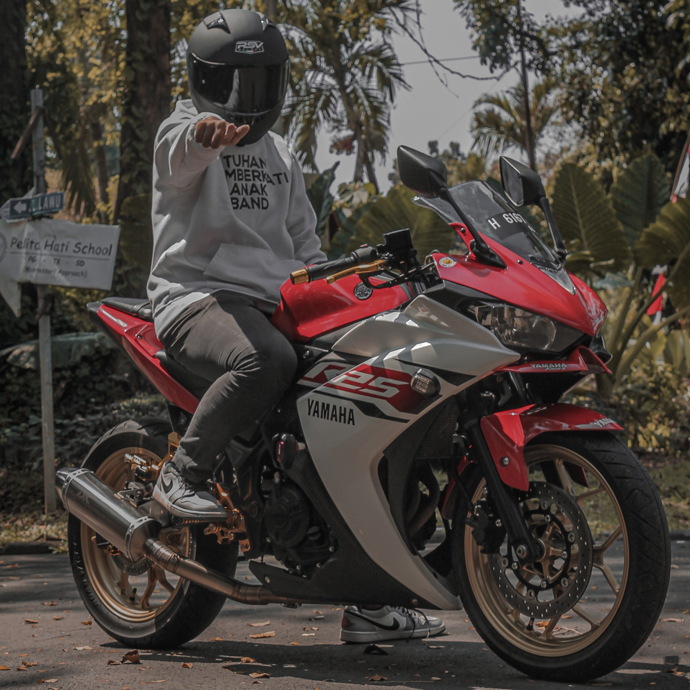

Laurensius Adhyaksa Bagas Prasetya
Tukang Sayang si Merah
Overview
Hi gess, kenalin nih, aku Laurensius Adhyaksa Bagas Prasetya mau mengenalkan motor kesayangan nih, namanya si Bobon, dia merupakan kuda besi kesayanganku.
| Skill | Pengalaman |
|---|---|
|
|